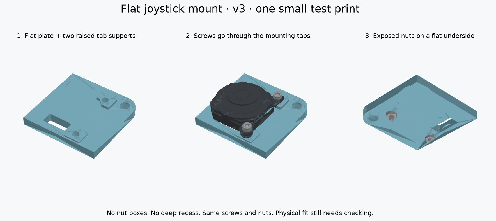

Archived joystick design.The current candidate is mounting v5: a separate pegged adapter, a flat joystick area on the upper plate, and hidden tray fasteners. Both full plates change.
Open the current v5 CAD and fit guide → ← Codex Micro build guideA flat plate. Two raised supports.
The joystick rests on the plate, and two exposed nuts underneath hold its screws. The nuts are accessible with small pliers.
Print one small corner first.28.7 × 28.7 mm. One piece. Flat bottom on the bed, raised supports facing up. Supports OFF for this test.
Download the one v3 test STL ↓ 
Actual CAD geometry. The reference thumb cap is simplified; check the real cap's full movement.
How it fastens
Screw head → joystick tab → raised support → plate → exposed nutHold each nut with small pliers while turning its screw from above. The nut tightens directly against the flat underside. Fit the nuts with the plate off the case, where you can reach them.
Print settings
- One STL, 100% scale. Existing PETG, 0.4 mm nozzle, 0.10 mm layers, four walls, 100% infill for this small test.
- Flat side DOWN, raised supports UP. Leave the STL in its supplied orientation.
- Supports OFF for the corner. A brim is optional for bed adhesion.
Same screws and nuts
Your 8 mm screws fit the modeled stack. They extend about 1.2–1.7 mm beyond the nuts; keep those tips clear of wiring. No new fastener size or electronics are specified.
Try it in this order
- Dry-fit. Unplug the KB2040. Put the joystick on the corner, ears facing the outside edge and solder pads over the rectangular wire opening. The raised support nearest the larger case hole is B. Do not add the old shims.
- Check the seats. The body and both tabs should rest flat. Stop if it rocks or a tab has a gap; don't use the screws to pull it down.
- Attach. Put the screws through from above. Start the nuts by hand underneath, then hold each nut with pliers and gently tighten its screw. Both nuts should sit flat.
- Move. Slide the thumb cap fully in all directions and diagonally. The fixed housing should stay still, and nothing should catch.
- Check the case. Remove the old top plate and rest this corner on the bare case ledge. Align the rounded corner and larger M3 case hole. Check nut, screw-tip and wire clearance. This replaces a section of the plate; it doesn't sit in the old recess.
- Send top and side photos. Wait to print the full plate until the corner fits.
Files
The full plate also prints face up, but includes the original underside switch-clip reliefs. Check those overhangs in the slicer and add local support if needed. The supports-OFF recommendation applies to the small corner.
Detailed instructions and sources · CAD checks · Source
Fit still needs checking on your hardware.Both meshes are closed, connected solids. CAD checks pass for the reference joystick, case, screws, nuts and nominal neighboring keycaps. Physical fit, strength and full thumb-cap travel remain unverified.
The main site's full-keyboard animation and original assembly STEP show the legacy mount. Use this guide for v3.